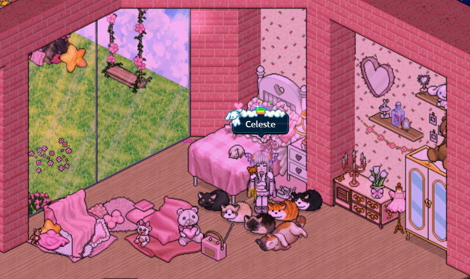

Sobre mí
Mi interés por Desarrollo Web surgió como una forma de complementar la Licenciatura en Nutrición, ya que puede brindarme herramientas muy útiles para comunicar información, crear recursos educativos y desarrollar nuevos proyectos.
Me interesa seguir aprendiendo a crear páginas web que sean fáciles de utilizar y que permitan presentar información de manera clara. A través de esta tecnicatura estoy incorporando conocimientos de programación y diseño web.
Además, me gustaría aplicar estos conocimientos en proyectos relacionados con la nutrición, como sitios educativos y herramientas digitales que puedan resultar útiles para otras personas.
Considero que combinar ambas carreras puede abrirme nuevas posibilidades profesionales y permitirme desarrollar mis propias ideas.

Tecnologías de interés
- Python
- HTML
- CSS